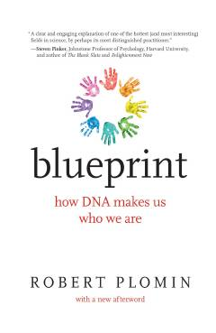

BHGenetika inson shaxsiyati va xulq-atvorini qanday belgilashi haqidagi ilmiy tadqiqot.
Ushbu kitobda xulq-atvor genetigi Robert Plomin inson shaxsiyati, intellekti va xarakterining shakllanishida genlarning atrof-muhitga nisbatan ustunligini ilmiy dalillar bilan tushuntiradi. Muallif DNK tahlili inson hayotini qanday bashorat qilishi va bu kashfiyotlar jamiyat uchun qanday axloqiy savollarni keltirib chiqarishi haqida bahs yuritadi.